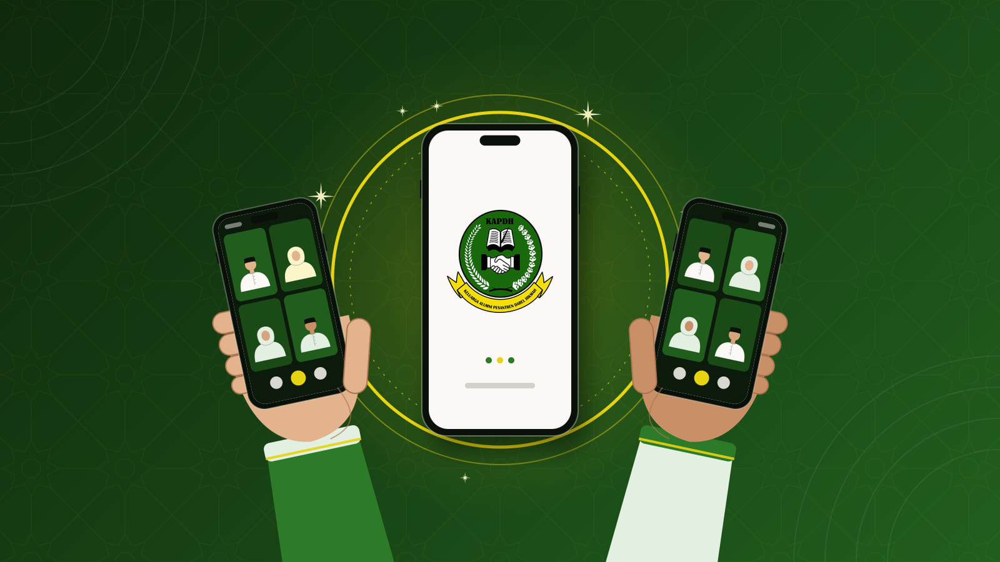
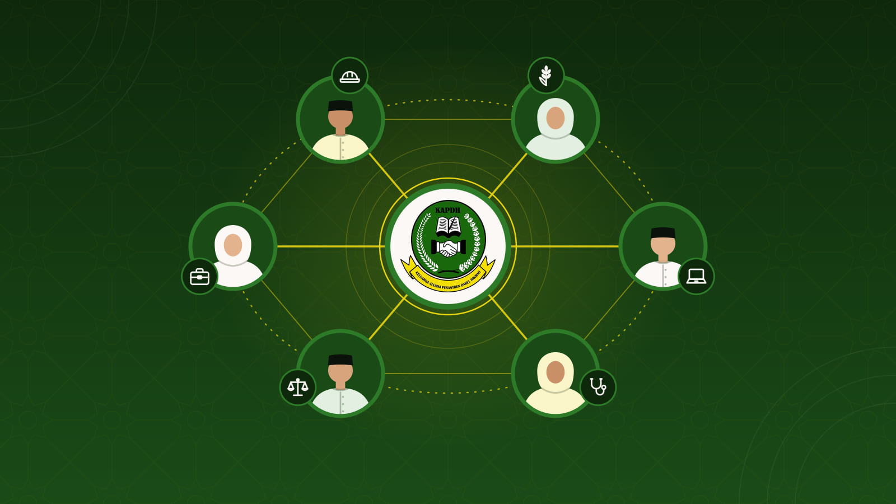
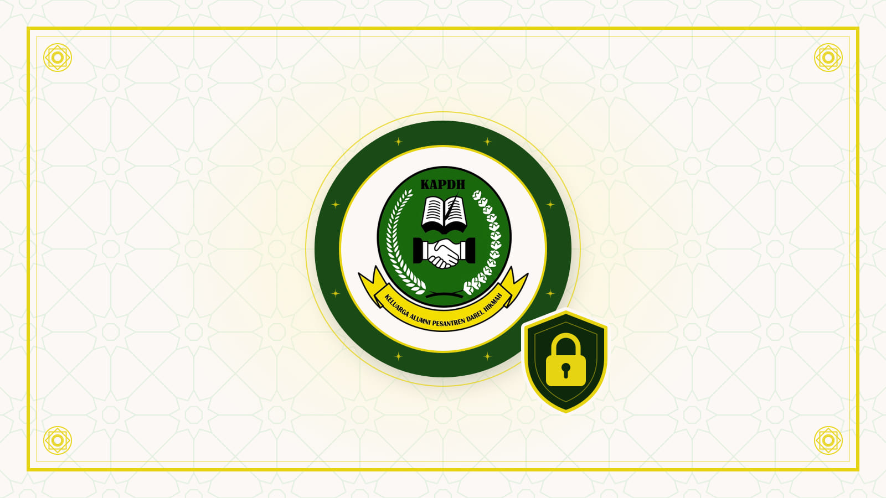
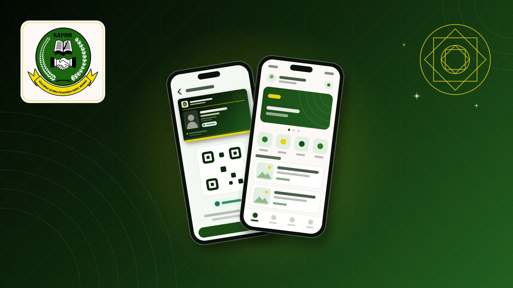

Cangkang navigasi bawah
Event Mendatang
Lihat semua
Peluncuran KAPDH Apps dan Silaturahmi Alumni
Sabtu, 31 Okt 2026
Daring melalui Zoom

Temu Jejaring Alumni Lintas Profesi
Sabtu, 14 Nov 2026
Daring melalui Google Meet
Halal Bihalal dan Silaturahmi Akbar Alumni
Minggu, 21 Mar 2027
Aula Pondok Pesantren Darel Hikmah
Berita Terbaru
Lihat semua
OrganisasiMengenal KAPDH: Perkumpulan Berbadan Hukum dan Komitmen Pelindungan Data Anggota
KAPDH adalah perkumpulan alumni berbadan hukum yang disahkan Menteri Hukum dan HAM. Kenali maksud dan tujuan perkumpulan, serta cara KAPDH menjaga data pribadi anggota sesuai UU Pelindungan Data Pribadi.
Panduan Iuran Keanggotaan dan KTA Digital: Pembayaran, Verifikasi, dan Perpanjangan
14 Okt 2026

KAPDH Apps Resmi Hadir: Wadah Digital Silaturahmi Alumni Darel Hikmah
11 Okt 2026
NavigationBar M3 tinggi 64, latar putih, indikator 64 x 32 green100, ikon terisi pada tab terpilih, label 12 (w600 primary / w400 muted), labelBehavior alwaysShow. Lencana Jejaring = room belum dibaca + undangan grup (Badge primary).
_TabIcon bergembok (tab khusus anggota aktif): Badge neutral (#3F4A3E) berisi Icons.lock 10 putih, padding 2; gembok hanya penanda visual. Tab tetap terlihat; tooltip "Event, khusus anggota aktif". Lencana jumlah tidak tampil pada tab bergembok.
Lembar tab khusus anggota aktif (showLockedTabSheet)
Event khusus anggota aktif
showModalBottomSheet (root navigator, isScrollControlled, drag handle). StatusHero lock_outline + KapdhButton "Bayar iuran" ke /onboarding/fees + TextButton "Tutup" selebar lembar.
Event khusus anggota aktif
Khusus tab Event untuk anggota expired: kalimat tiket lunas + KapdhButton.outlined "Lihat Tiket Saya" (ikon confirmation_number_outlined) ke /tickets.
Jejaring khusus anggota aktif
Tab selain Event: tanpa tombol Tiket Saya.
Event khusus anggota aktif
Status tidak dikenal (null): badge "Status Tidak Dikenal" (help_outline, neutral), tanpa tombol aksi, hanya "Tutup". Latar contoh memakai Beranda kedaluwarsa.
Varian bilah navigasi (di luar ponsel, tanpa inset gestur)
Ikon tab (AppShell.tabs): home_outlined/home, event_outlined/event, badge_outlined/badge, school_outlined/school, person_outline/person. Angka lencana di atas 99 ditulis "99+".